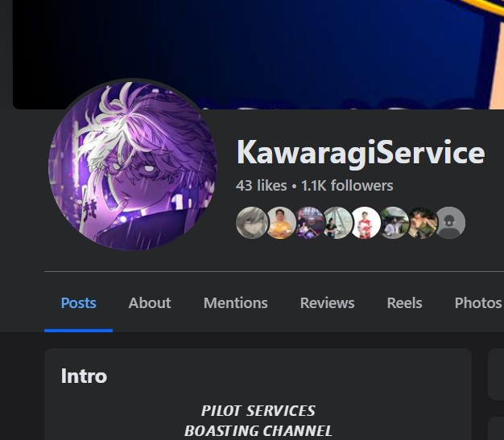
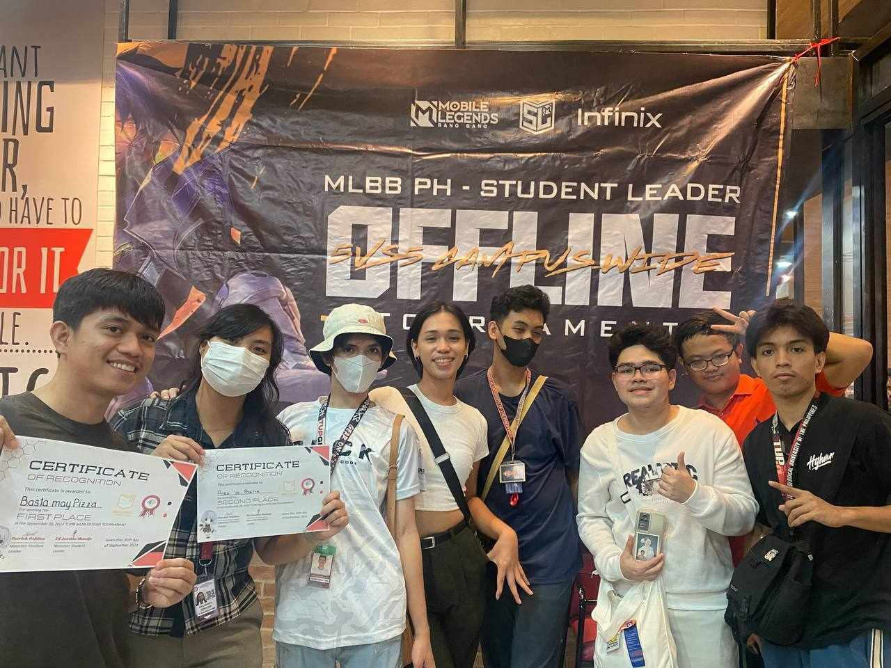
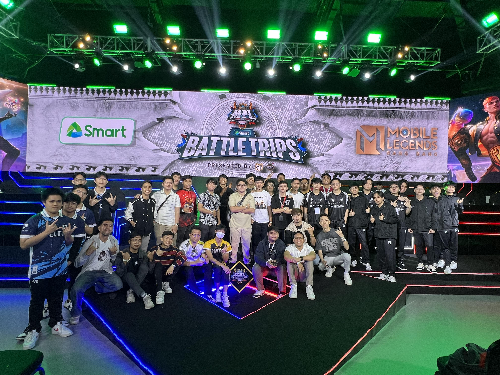

Playing Mobile Legends is one of my favorite hobbies because it
helps me relax and have fun after a busy day. When I play, I can
forget about my schoolwork and just enjoy the game. It’s also a
great way to spend time with my friends. We play together, work as a
team, and have fun chatting during the game. These moments help us
bond and make our friendship stronger. For me, it’s not just about
winning, but about having a good time with friends and enjoying the
game together. It’s a simple way to relax and connect with the
people I care about.

Business
With my experience in Mobile Legends tournaments and strong gameplay
skills, I started a business where I help players reach high ranks
like Immortal by piloting their accounts and improving their
rankings. I also sell premium and regular Starlight cards, offering
exclusive in-game benefits. Through diamonds earned in tournaments,
I exchange them for valuable items that I can sell. This business
allows me to combine my passion for the game with an entrepreneurial
spirit, helping others enjoy the game while making a profit from my
achievements and in-game sales.

Joining Tournaments
One of my best experiences in Mobile Legends was winning the
champion title in the Technological University of the Philippines -
Manila tournament on September 30, 2023. I didn’t expect to win, but
it made me really happy and taught me valuable lessons about
teamwork, strategy, and staying calm under pressure. This experience
has motivated me to keep improving my skills and showed me that hard
work leads to success. It also inspired me to pursue more
competitive opportunities in the future and helped build my
confidence in the game.
Editing
I also enjoy editing videos, and one of my memorable experiences was
on October 12, 2024, when I edited a video for a Mobile Legends
event. The video showcased a competitive tournament in the community
and highlighted the school's tournament connected to MLBB. It also
featured pictures from my battle trip and shared my experience of
watching the live MPL event at the venue. This video editing project
allowed me to combine my love for Mobile Legends with my creative
skills, capturing the excitement and energy of the event for others
to enjoy.
MLBB - BATTLETRIPS
By Moonton - September 21, 2024

One of my best experiences in Mobile Legends was winning the champion
title in the Technological University of the Philippines - Manila
tournament on September 30, 2023, organized by Moonton and student
leaders. I didn’t expect to win because the competition was tough, but
winning made me really happy and proud. It taught me important lessons
about teamwork, strategy, and staying calm under pressure. This
experience has encouraged me to keep improving my skills and showed me
that with hard work, you can achieve things you don’t expect.
About Me
I am a third-year student at the Technological University of the
Philippines (TUP) - Manila, where I’m studying Information Systems. I
really enjoy my classes and the interesting things I’m learning about
technology and how it works. In my free time, I love playing mobile
games like Mobile Legends. Gaming is a fun way for me to relax and
connect with friends. I also enjoy running every day. It helps me stay
fit and gives me a chance to clear my mind after a long day of studying.
I consider myself a friendly person, and I’m always happy to listen to
others. I believe that good conversations are important for building
strong friendships. In terms of my studies, I have been learning
programming languages like C, C++, and Java for about three years now. I
know I still have a lot to learn, but I’m eager to keep improving my
skills and apply what I learn in real-world situations. I’m excited
about my future and the opportunities ahead of me. Thanks for taking the
time to read about me!